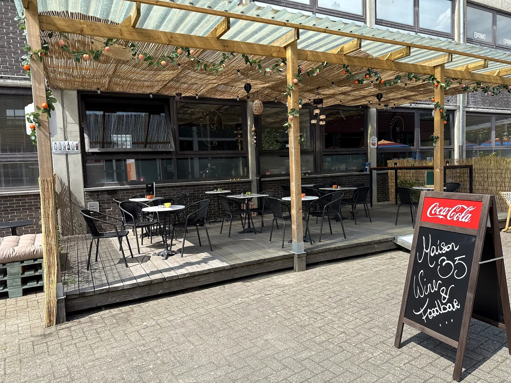

Aanrader van het huis
Aanrader van het huisCarpaccio
€ 17,50Rundercarpaccio met parmezaan, pijnboompitten, rucola en een vleugje truffelmayonaise.
Wijn per glas of per fles, cocktails die we met aandacht mixen en kleine borden om samen te delen. Aan onze groene toog, diep in de lounge of buiten op het terras.


Je komt binnen voor één glas na het werk en blijft hangen voor een plank kazen, een tweede fles of een cocktail die je nog niet kende. Twijfel je wat je moet kiezen? Vraag het gerust. We denken graag mee met wat je eet en waar je zin in hebt.
Kleine borden die je samen op tafel zet, bij een glas wijn of een cocktail. Alles vers, en de loempia's rollen we zelf.
Aanrader van het huisRundercarpaccio met parmezaan, pijnboompitten, rucola en een vleugje truffelmayonaise.

Een selectie fijne kazen met noten. Gemaakt om samen van te snoepen tijdens een glas wijn.

Fijne vleeswaren op een plank, om te delen. Subliem bij een glas rood.

Tomaat, romige mozzarella en verse basilicum.
€ 14,00
Krokant uit de oven, met huisbereide saus.
€ 9,00
Zelf gerold, met kip, veggie of een mix.
Vraag ernaarOok op de kaart: vitello tonnato, bruschetta, nacho's, hummus en aubergines in look.
Onze huiswijnen schenken we per glas of per fles. Zin in bubbels? Dan is er prosecco, ook in rosé. Elke maand zetten we een ander bier in de kijker, en voor wie niet drinkt maken we mocktails.


In de winter zit je warm binnen bij de groene tegels. Van zodra de zon er is, gaat het terras onder de pergola open.
 De toog
De toog
Het terrasVerjaardag, teamavond of gewoon een goeie reden: ons zaaltje is te huur. Bel ons even, dan bekijken we samen wat er kan.
★★★★★
“Veel keuze aan dranken, fris, bier, cocktails en mocktails, allemaal lekker en mooi klaargemaakt. Toffe bediening, gezellige sfeer en een leuk zonneterras en prachtig interieur!”
“Een gezellige drankgelegenheid in hartje Beringen centrum met veel keuze tussen drank en lekkere hapjes. Heel vriendelijke ontvangst door Dokan en zijn team.”
“Top zaak lekkere wijnen en de carpaccio is een aanrader!”

Gewoon binnenwandelen mag altijd. Kom je met een groep, bel dan even, dan houden we een tafel voor je vrij.
Ik maakte deze demo voor jullie om te tonen wat er kan. Na een kort gesprek maak ik er iets veel persoonlijkers van, helemaal naar jullie wens.
Vrijblijvend. Ik kom langs of we bellen.
Op maat, op jullie eigen domein.
Geen voorschot. Jullie betalen pas als alles klaar is.
Hosting, domeinnaam en kleine wijzigingen, zoals nieuwe openingsuren.
Omdat een voorbeeld meer zegt dan een mail. Zo zien jullie meteen wat er kan, en het kost jullie niets.
Nee. Het gesprek is vrijblijvend. Vinden jullie het niks, dan is het daarmee gedaan.
Na ons gesprek staat jullie site binnen 10 tot 14 dagen online.
Zeker. Jullie domeinnaam kan gewoon blijven, de nieuwe site komt in de plaats van de oude.
Nee, dat doe ik op basis van ons gesprek. Eigen foto's zijn mooi meegenomen, maar niet nodig om te starten.